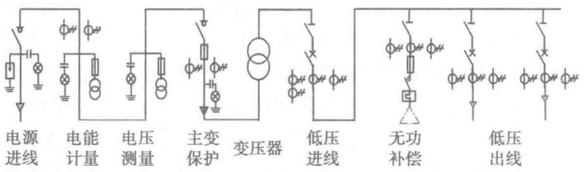

同发出信号，提示值班员迅速采取措施，使之尽快恢复正常，或由装置自动地进行调整，或将那些继续运行会引起事故的电气设备予以切除。反应不正常工作情况的继电保护装置允许带一定的延时动作。
- 实现电力系统的自动化和远程操作，以及工业生产的自动控制。如：自动重合闸、备用电源自动投入、遥控、遥测等。
2.2.6 中压配电一次接线典型方案
一路供电电源、一台变压器的10kV变电所主接线典型方案如图2-6所示。
- 变压器一次侧采用线路—变压器组单元接线，二次侧采用单母线接线。
- 设专用电能计量柜。柜中设专用的、精度等级为0.2级的互感器（CT）。（注：该互感器不得与保护、测量回路共用）。计量柜内电度表数据采用RS-485通信接口把所测数据均上传至运维后台显示并合成报表。
- 中压侧设置电压测量柜以测量、监视电压，并提供交流操作电源。
- 变压器的控制及保护采用负荷开关与熔断器组合电器，而不采用中压断路器，以降低投资和简化二次接线。
- 低压进线总开关和低压出线开关均采用低压断路器，可带负荷操作且恢复更快。
- 变电所的负荷无功补偿采用低压母线集中补偿方式，选用低压成套无功自动补偿装置，与其他低压开关柜并排安装。

两路供电电源的10kV变电所主接线典型方案如图2-7所示，变电所由两路外供电源供电。
- 变压器一次侧采用单母线分段接线，二次侧也采用单母线分段接线。
- 两路电源均设置电能计量柜，计量柜内电度表数据采用RS-485通信接口把所测数据均上传至运维后台显示并合成报表。
- 备用电源的投入方式可采取手动投入，也可采取自动投入。
- 低压进线柜放置在中间，而低压出线柜则放置在两侧，便于增容时加装出线柜。
- 变电所的负荷无功补偿采用低压母线集中补偿方式，选用低压成套无功自动补偿装置，与其他低压开关柜并排安装。电容柜在设计时应满足属地供电部门的要求及